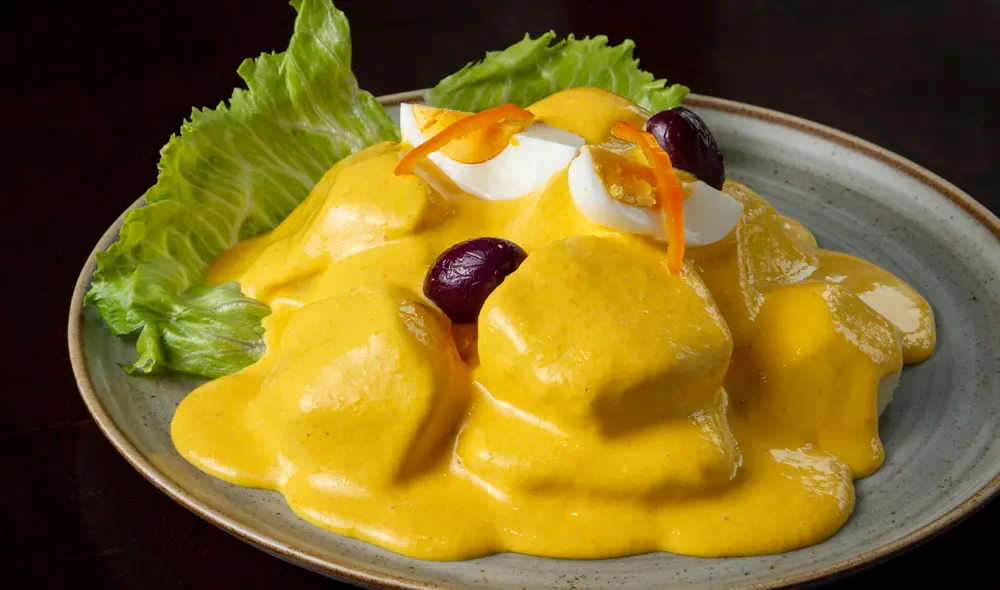
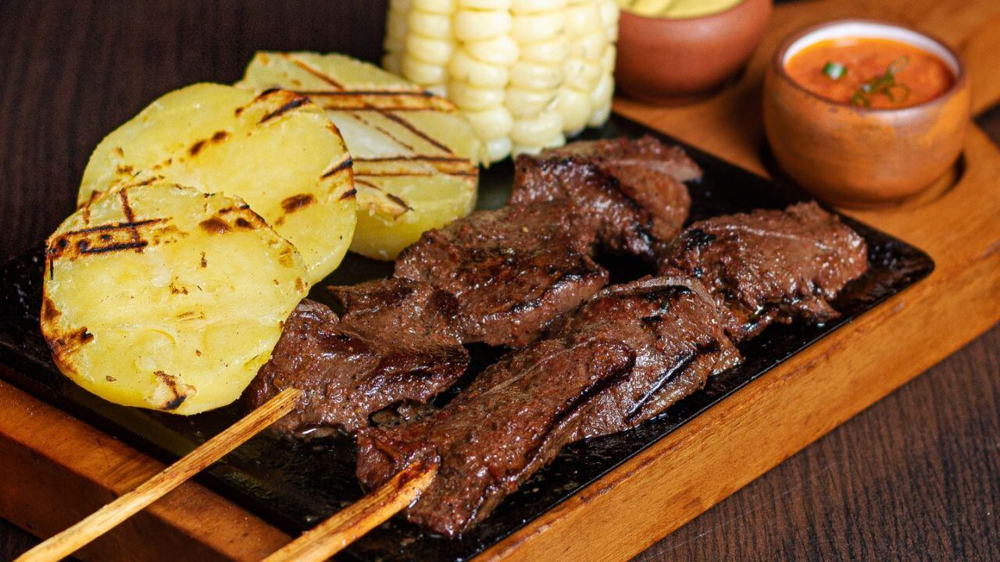
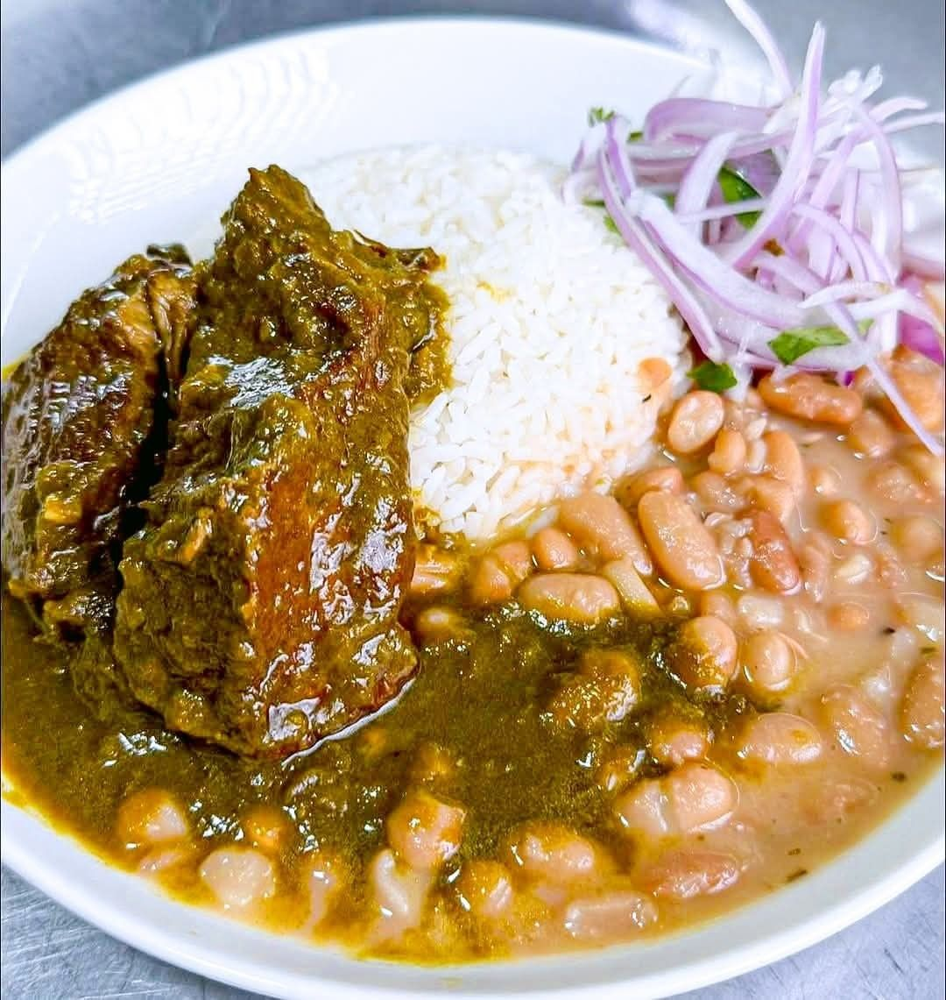
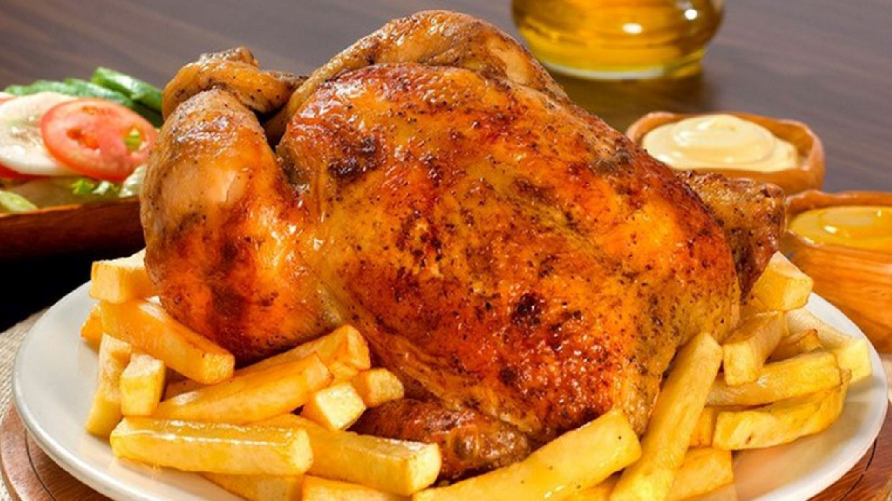

Ceviche
El plato bandera del Perú. Pescado fresco marinado con limón, cebolla y ají, servido con camote y choclo.
Ver receta
Lomo Saltado
Un clásico criollo con toque oriental: carne salteada con cebolla, tomate y papas fritas.
Ver receta
Ají de Gallina
Un guiso suave de pollo con salsa cremosa de ají amarillo, pan y leche. ¡Sabor reconfortante!
Ver receta
Causa Limeña
Colorida y fresca: papa amarilla sazonada, combinada con limón y ají, rellena de pollo o atún.
Ver receta
Juane
Desde la Amazonía peruana, arroz con pollo y especias envuelto en hojas de bijao. ¡Un deleite selvático!
Ver receta
Arroz con Mariscos
Un festival marino en un solo plato: arroz salteado con camarones, calamares, choros y un toque de ají panca.
Ver receta
Papa a la Huancaína
Papas hervidas sobre una deliciosa crema de ají amarillo, queso fresco y leche. Entrada infaltable.
Ver receta
Tallarines Verdes
Una salsa suave y cremosa hecha de albahaca, espinaca, queso fresco y leche. Perfecto con bistec apanado.
Ver receta
Anticuchos
Clásicos de las calles peruanas: brochetas de corazón de res marinadas en ají panca y vinagre.
Ver receta
Seco de Cabrito
Un plato norteño lleno de sabor: cabrito tierno cocinado con chicha de jora, culantro y especias.
Ver receta
Pollo a la Brasa
El favorito de todos: pollo marinado con especias peruanas, dorado y jugoso a la brasa. Servido con papas fritas y ensalada.
Ver receta
Pan con Chicharrón
El desayuno criollo por excelencia: chicharrón crocante, camote frito y sarza criolla dentro de un pan francés.
Ver receta